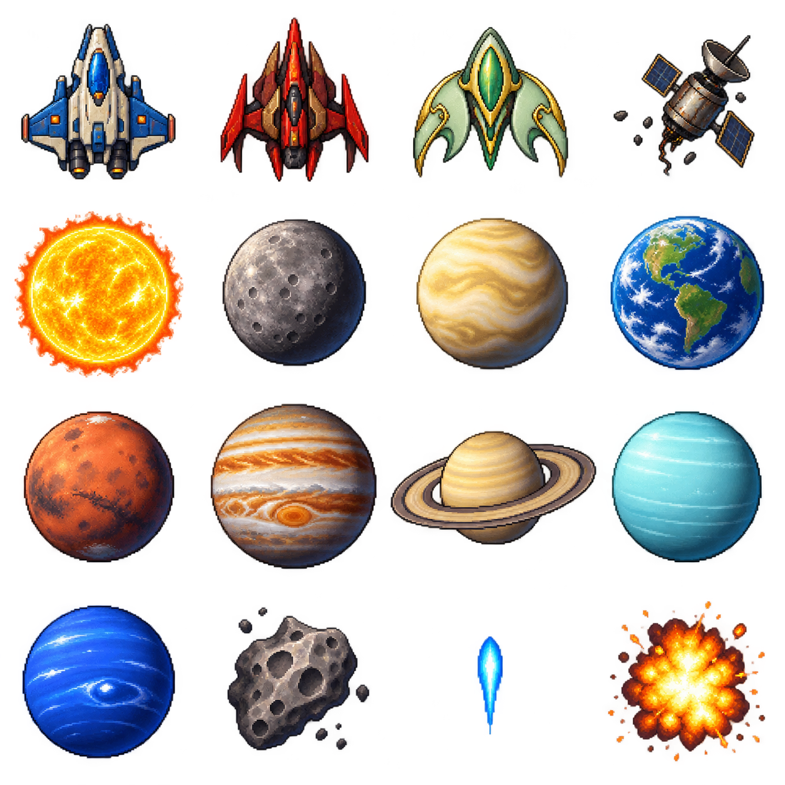
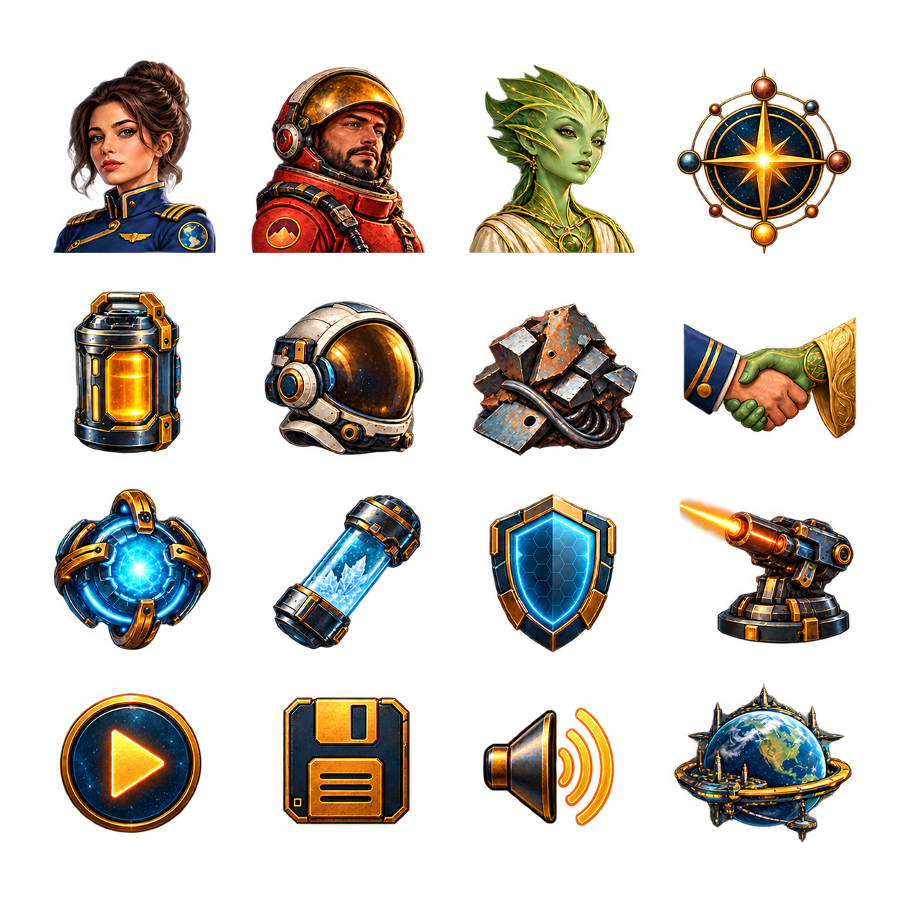

T20 Build Star-Not, a complete small space adventure
Result: a complete short adventure in our solar system, with exactly three peoples: Earth-race, Mars-race and Venutians. Recover relay cores, negotiate, manage fuel, fight patrols, and finish the mission at Earth. An optional second pilot helps in combat on the shared keyboard or a gamepad.
Working example: examples/star-not/. Editable engine sources: tools/examples/star-not/. This tutorial includes every gameplay module and the project/scene setup so you can recreate the example in your own folder.
1. Write the game plan first#
Use this one-page plan:
| Question | Answer |
|---|---|
| What does the player do? | Travel, talk, collect supplies and fight short ship encounters. |
| What is the goal? | Three cores + Mars accord + Venutian accord; activate the relay at Earth. |
| What creates pressure? | Travel and encounters use days; the relay window closes after day 40. |
| What happens after a mistake? | Rescue returns the fleet to orbit. Repair and retry; a tow prevents being permanently stranded. |
| What is co-op? | P1 handles the campaign; P2 is an extra allied ship during combat. |
| What is outside this game's scope? | Other star systems, extra races, multiplayer networking, colonies, complex economies. |
This is a game design, not a list of technologies. Every feature above contributes to the mission. The larger-project guide explains how to scale this approach.
2. Create the project structure#
Make your own my-star-not folder:
my-star-not/
index.html
nord.project.json
scenes/main.scene.json
scripts/
star-not.js
sn/
data.js
flight.js
dom.js
touch.js Reusable code-drawn joystick and buttons
assets/
sprites/space.png
sprites/space.png.meta.json
ui/portraits.png
ui/portraits.png.meta.json
ui/game.css
fonts/inter.woff2
fonts/LICENSE
audio/
music/cruise.wav
music/combat.wav
music/victory.wav
sfx/laser.wav
sfx/hit.wav
sfx/explosion.wav
sfx/travel.wav
sfx/hail.wav
sfx/confirm.wav
sfx/victory.wav
sfx/defeat.wav
GUIDE.md
assets.md
SOURCE.md
COPYINGScenes describe the starting entities. Scripts describe behavior. Assets are replaceable files. Keeping those separate makes it clear where to look when you change something.
3. Add the project settings#
Create nord.project.json from this complete file. The 2D tier selects Nord's Phaser adapter. The logical screen is 1024×720; fit preserves its shape when the window changes size.
The action names separate the two pilots. P1 uses arrows; P2 uses WASD. Giving both players the same “left” action would make them steer together.
{
"format": 1,
"name": "Star-Not",
"id": "com.crowelian.starnot",
"type": "2d",
"engineVersion": "0.1.0",
"startScene": "scenes/main.scene.json",
"display": {
"width": 1024,
"height": 720,
"scale": "fit",
"pixelArt": false,
"background": "#091923"
},
"physics": {
"engine": "none",
"gravity": [
0,
0,
0
]
},
"input": {
"actions": {
"p1Left": [
"ArrowLeft"
],
"p1Right": [
"ArrowRight"
],
"p1Thrust": [
"ArrowUp"
],
"p1Brake": [
"ArrowDown"
],
"p1Fire": [
"Space"
],
"p1Shield": [
"ShiftLeft",
"ShiftRight"
],
"p2Left": [
"KeyA"
],
"p2Right": [
"KeyD"
],
"p2Thrust": [
"KeyW"
],
"p2Brake": [
"KeyS"
],
"p2Fire": [
"KeyF"
],
"p2Shield": [
"KeyG"
],
"pause": [
"Escape",
"KeyP"
],
"select": [
"Mouse0"
]
}
},
"plugins": [
"ui",
"audio"
],
"ui": {
"skin": "cyber",
"theme": "nord"
}
}
4. Add the boot page#
Create index.html. It loads the local Phaser runtime, imports Nord's boot, reads the project file and starts it. The import map makes import { NordScript } from 'nord' work in your scripts.
<!doctype html>
<html lang="en"><head><meta charset="utf-8"><meta name="viewport" content="width=device-width,initial-scale=1"><title>Star-Not</title>
<style>html,body{margin:0;height:100%;background:#101418;overflow:hidden}#stage{position:relative;width:100vw;height:100vh}</style>
<script type="importmap">{"imports":{"nord":"/runtime/core/index.js"}}</script></head>
<body><div id="stage"></div>
<script src="/vendor/phaser/phaser.min.js"></script>
<script type="module">
import { boot } from '/runtime/phaser/index.js';
try {
const project = await (await fetch('nord.project.json')).json();
await boot(project, { container: document.getElementById('stage') });
window.__nord_ready = true;
} catch (e) { console.error(e); window.__nord_error = String(e); }
</script></body></html>
The engine URLs are local routes supplied by nord serve. For export, Nord copies the pinned engine/runtime files into the output. Do not replace these with a CDN.
5. Add the starting scene#
Create scenes/main.scene.json using the whole file below. It has a camera, an off-screen atlas source and the Expedition entity with the main script attached.
The atlas source makes the loader discover the spritesheet before the script creates the visible objects. It is not a visible gameplay object.
{
"format": 1,
"name": "main",
"settings": {},
"entities": [
{
"id": "eeeeeee1",
"name": "Camera",
"enabled": true,
"tags": [],
"layer": 0,
"transform": {
"pos": [
512,
360,
0
],
"rot": [
0,
0,
0
],
"scale": [
1,
1,
1
]
},
"components": [
{
"type": "camera",
"zoom": 1
}
],
"scripts": [],
"children": [],
"prefab": null
},
{
"id": "eeeeeee2",
"name": "Atlas source",
"enabled": true,
"tags": [],
"layer": 0,
"transform": {
"pos": [
-999,
-999,
0
],
"rot": [
0,
0,
0
],
"scale": [
1,
1,
1
]
},
"components": [
{
"type": "sprite",
"texture": "assets/sprites/space.png",
"frame": 0,
"alpha": 0
}
],
"scripts": [],
"children": [],
"prefab": null
},
{
"id": "eeeeeee3",
"name": "Expedition",
"enabled": true,
"tags": [],
"layer": 0,
"transform": {
"pos": [
0,
0,
0
],
"rot": [
0,
0,
0
],
"scale": [
1,
1,
1
]
},
"components": [],
"scripts": [
{
"path": "scripts/star-not.js",
"attributes": {}
}
],
"children": [],
"prefab": null
}
]
}
6. Copy the reusable sprites and audio#
Copy the entire assets folder from examples/star-not/ into your own project, including the sidecars and font licence. You can replace files later at the same paths.


The full numbered inventory and every sound path are in examples/star-not/assets.md. The exact built-in ImageGen prompts are in ART_DIRECTION.md. The artwork and audio are original; none came from UQM.
A sprite uses the PNG and its metadata together:
{ "type": "sprite", "texture": "assets/sprites/space.png", "frame": 0, "size": [64, 64] }frame selects one picture in the atlas. size controls its displayed dimensions. Metadata records the source frame dimensions.
7. Add the little DOM helper#
Copy examples/star-not/scripts/sn/dom.js, or create it with this code. It is Nord's existing app DOM helper. Star-Not uses h to put accessible buttons, lists and text inside a Nord UI panel.
// Shared helpers for the app kits (not a library item). Tiny DOM builder + themed base CSS using the Nord UI variables.
export const css = `.nk{font:15px/1.4 var(--nord-font-ui,Inter,system-ui,sans-serif);color:var(--nord-fg,#eceff4);background:var(--nord-bg,#2e3440);padding:16px;box-sizing:border-box;height:100%;overflow:auto}
.nk *{box-sizing:border-box}.nk h2{margin:0 0 12px;font-size:20px}.nk button,.nk input,.nk select,.nk textarea{font:inherit;color:inherit;background:var(--nord-panel,#3b4252);border:1px solid var(--nord-border,#4c566a);border-radius:6px;padding:6px 10px}
.nk button{cursor:pointer;background:var(--nord-accent,#88c0d0);color:var(--nord-bg,#2e3440);border:0;font-weight:600}.nk button.ghost{background:transparent;color:inherit;border:1px solid var(--nord-border,#4c566a)}
.nk .row{display:flex;gap:8px;align-items:center;margin-bottom:8px}.nk .card{background:var(--nord-panel,#3b4252);border:1px solid var(--nord-border,#4c566a);border-radius:8px;padding:10px;margin-bottom:8px}
.nk .grow{flex:1}.nk .muted{opacity:.6}`;
let injected = false;
export function h(tag, props = {}, ...kids) {
const el = document.createElement(tag);
for (const [k, v] of Object.entries(props ?? {})) { if (k.startsWith('on')) el.addEventListener(k.slice(2), v); else if (k === 'class') el.className = v; else if (k === 'style' && typeof v === 'object') Object.assign(el.style, v); else if (v !== false && v != null) el.setAttribute(k, v === true ? '' : v); }
el.append(...kids.flat().filter((x) => x != null && x !== false));
return el;
}
export function shell(root, title) {
if (!injected) { document.head.append(h('style', {}, css)); injected = true; }
root.replaceChildren(); const box = h('div', { class: 'nk' }, h('h2', {}, title)); root.append(box); return box;
}
export const store = (key, init) => { let v = init; try { v = JSON.parse(localStorage.getItem(key)) ?? init; } catch {} return { get: () => v, set: (n) => { v = n; try { localStorage.setItem(key, JSON.stringify(v)); } catch {} } }; };
8. Describe the solar system in data.js#
Paste the complete file into scripts/sn/data.js.
- RACES contains the three people's names, portraits, ship frames, dialogue and combat numbers.
- PLANETS contains only our eight planets. The Sun is a separate visual object. Positions are a readable chart, not astronomical scale.
- freshCampaign creates one complete new campaign state. This makes New expedition predictable.
- travelCost computes fuel/day costs before enabling the travel button.
- missionReady is the single rule for whether Earth can complete the mission.
- validCampaign checks imported save data before the game uses it.
// Original solar-system campaign data. Map positions are a readable diagram, not astronomical scale.
export const WIDTH = 1024, HEIGHT = 720, ARENA = { left: 28, top: 100, right: 696, bottom: 650 };
export const RACES = {
earth: { name: 'Earth-race', captain: 'Captain Ada Vale', color: '#89c7eb', portrait: 0, ship: 0, hp: 24, thrust: 155, speed: 235, turn: 3.1, shot: 1, cooldown: 0.25, greeting: 'The solar relay is failing. Bring the three relay cores home, and convince Mars and Venus to share the network.' },
mars: { name: 'Mars-race', captain: 'Commander Rook', color: '#eb9c79', portrait: 1, ship: 1, hp: 19, thrust: 180, speed: 265, turn: 3.6, shot: 2, cooldown: 0.48, greeting: 'We built the outer relay, and Earth forgot us. Bring two units of scrap, or prove your resolve in a friendly duel. Then we will sign.' },
venus: { name: 'Venutians', captain: 'Speaker Vela', color: '#a4e0ba', portrait: 2, ship: 2, hp: 21, thrust: 130, speed: 205, turn: 2.7, shot: 1, cooldown: 0.2, greeting: 'Our floating gardens need clean ice. Bring a sample from Jupiter orbit, and our engineers will join your relay project.' },
};
const locations = [
['mercury','Mercury',5,54,-2.5,'earth','An abandoned survey station holds the first relay core. Salvage it and two units of scrap.'],
['venus','Venus',6,89,-1.9,'venus','A bright world of cloud cities. The Venutians want an ice sample from Jupiter orbit.'],
['earth','Earth',7,120,-.8,'earth','Home port. Repair, refuel, improve your ship and assemble the final solar relay.'],
['mars','Mars',8,151,.1,'mars','The Mars-race will sign an accord for two scrap, or after a friendly duel.'],
['jupiter','Jupiter',9,190,.85,'earth','Recover a clean ice sample from a research buoy. This helps the Venutians.'],
['saturn','Saturn',10,225,1.65,'mars','A rogue Mars-race patrol guards the second relay core. Defeat it to recover the core.'],
['uranus','Uranus',11,262,2.55,'venus','An empty weather buoy contains fuel and repair supplies. Claim it once.'],
['neptune','Neptune',12,300,3.2,'venus','A rogue Venutian patrol guards the final relay core. Defeat it and return to Earth.'],
];
export const PLANETS = locations.map(([id,name,frame,radius,angle,race,description],i)=>({id,name,frame,radius,race,description,x:350+Math.cos(angle)*radius,y:376+Math.sin(angle)*radius,size:i===4?83:i===5?96:61}));
export const planet = id => PLANETS.find(p=>p.id===id);
export function freshCampaign() { return { version:1, location:'earth', day:1, fuel:14, crew:24, scrap:0, cores:[], accords:{earth:true,mars:false,venus:false}, visits:{}, ice:false, upgraded:false, won:false, lost:false, journal:['Day 1: Earth launches the solar-relay mission.'] }; }
export function travelCost(from,to) { const a=PLANETS.findIndex(p=>p.id===from),b=PLANETS.findIndex(p=>p.id===to); return {fuel:Math.min(6,2+Math.ceil(Math.abs(a-b)/2)),days:1+Math.ceil(Math.abs(a-b)/3)}; }
export const missionReady = c => c.cores.length===3 && c.accords.mars && c.accords.venus;
export function record(c,text) { c.journal.push(`Day ${c.day}: ${text}`); c.journal=c.journal.slice(-40); if(c.day>40)c.lost=true; }
export function validCampaign(c) {
return c?.version===1 && PLANETS.some(p=>p.id===c.location) && Number.isInteger(c.day) && c.day>=1 && c.day<=60 && Number.isFinite(c.fuel) && c.fuel>=0 && c.fuel<=14 && Number.isFinite(c.crew) && c.crew>=0 && c.crew<=24 && Number.isInteger(c.scrap) && c.scrap>=0 && c.scrap<=100 && Array.isArray(c.cores) && c.cores.length<=3 && new Set(c.cores).size===c.cores.length && c.cores.every(p=>['mercury','saturn','neptune'].includes(p)) && c.accords && ['earth','mars','venus'].every(k=>typeof c.accords[k]==='boolean') && c.visits && typeof c.visits==='object' && !Array.isArray(c.visits) && typeof c.ice==='boolean' && typeof c.upgraded==='boolean' && typeof c.won==='boolean' && typeof c.lost==='boolean' && Array.isArray(c.journal) && c.journal.length<=40 && c.journal.every(s=>typeof s==='string'&&s.length<500);
}
Keep dialogue and balance numbers here instead of scattering them among drawing code. Changing a ship's speed should not require finding every place that ship appears.
9. Build ship motion in flight.js#
A ship has position, facing direction and velocity. Thrust changes velocity in the direction the nose faces. Turning alone does not turn the existing drift. Braking reduces velocity. Wrapping moves a ship from one edge to the opposite edge.
The normal-thrust rule is a small simplified adaptation from the requested 0xDEC0DE/sc2-uqm branch uqm-ee, commit d0f959d013b52c275f27d944039073d066dc8c93. The rest of this campaign is original. Keep SOURCE.md and COPYING with redistributed game code: the game is GPL-2.0-or-later. Original new sprites/audio have their separate MIT permission.
Create scripts/sn/flight.js:
// GPL-2.0-or-later. Simplified JavaScript adaptation of the normal-acceleration branch
// of inertial_thrust(), sc2/src/uqm/ship.c, 0xDEC0DE/sc2-uqm uqm-ee
// d0f959d013b52c275f27d944039073d066dc8c93; Copyright Paul Reiche, Fred Ford 1992–2002.
// Uses floating-point seconds rather than UQM fixed-point ticks. No gravity slingshot branch.
export function thrust(ship, amount, dt) {
const dx=ship.vx+Math.sin(ship.angle)*ship.spec.thrust*amount*dt;
const dy=ship.vy-Math.cos(ship.angle)*ship.spec.thrust*amount*dt;
const wanted=dx*dx+dy*dy,max=ship.spec.speed*ship.spec.speed;
if(wanted<=max){ship.vx=dx;ship.vy=dy;}
else {const scale=ship.spec.speed/Math.sqrt(wanted);ship.vx=dx*scale;ship.vy=dy*scale;}
}
export const wrap = (n,lo,hi) => ((n-lo)%(hi-lo)+(hi-lo))%(hi-lo)+lo;
export function wrappedDelta(from,to,span) { let d=to-from;if(d>span/2)d-=span;if(d<-span/2)d+=span;return d; }
export function shortestTurn(from,to) { return Math.atan2(Math.sin(to-from),Math.cos(to-from)); }
export function moveShip(ship,controls,dt,arena) {
ship.angle+=controls.turn*ship.spec.turn*dt;
if(controls.thrust)thrust(ship,controls.thrust,dt);
if(controls.brake){const drag=Math.exp(-3.5*dt);ship.vx*=drag;ship.vy*=drag;}
ship.x=wrap(ship.x+ship.vx*dt,arena.left,arena.right);ship.y=wrap(ship.y+ship.vy*dt,arena.top,arena.bottom);
ship.cooldown=Math.max(0,ship.cooldown-dt);ship.shield=Math.max(0,ship.shield-dt);ship.shieldWait=Math.max(0,ship.shieldWait-dt);
if(controls.shield&&ship.shieldWait<=0){ship.shield=1.1;ship.shieldWait=5;}
}
export function gamepadControls(pad) {
if(!pad)return {turn:0,thrust:0,fire:false,brake:false,shield:false};
const axis=pad.axes?.[0]||0,up=-(pad.axes?.[1]||0),button=i=>!!pad.buttons?.[i]?.pressed;
return {turn:Math.abs(axis)>.18?axis:0,thrust:button(7)?1:Math.max(0,up>.18?up:0),fire:button(0),brake:button(1),shield:button(2)};
}
dt is seconds since the previous update. Multiplying motion by it makes speed independent of the display's frame rate. shortestTurn avoids spinning almost a full circle when a target is just across the angle boundary. wrappedDelta lets the enemy aim correctly across arena edges.
10. Define co-op controls#
P1's input comes from Nord's named keyboard actions. Shared-keyboard P2 uses different actions. Gamepad P2 uses the first connected controller's standard axes/buttons:
| Action | P1 | P2 keyboard | P2 gamepad |
|---|---|---|---|
| Turn | Left/Right arrows | A/D | Stick horizontal |
| Thrust | Up arrow | W | Stick up / right trigger |
| Brake | Down arrow | S | B / Circle |
| Fire | Space | F | A / Cross |
| Shield | Shift | G | X / Square |
| Pause | Esc/P | Shared | Start / Menu |
gamepadControls in flight.js returns a plain object, just like the keyboard code. This lets the movement code stay the same for both devices. A dead zone ignores tiny stick movements. Press a controller button so the browser exposes it.
P2 has a separate 16-hull ship. Friendly shots do not damage teammates. A surviving teammate can finish the fight if the other is disabled. Co-op mode is selected before combat; it does not split the campaign or create network multiplayer.
10b. Add mobile controls#
Create scripts/sn/touch.js with this reusable module. The joystick calls Nord's existing virtualJoystick; the buttons call input.setVirtual using the same action names as keyboard controls. The game shows them automatically on a coarse-pointer device, or you can enable them in the orbit menu for desktop pointer testing. Landscape is recommended for this 1024×720 game.
// Reusable code-drawn touch controls. Copy into any Nord 2D/3D project; map your action names.
import { virtualJoystick } from 'nord';
export function mountTouchControls(input,parent,{left='left',right='right',up='up',down='down',fire='fire',shield='jump',rightInset=24,bottomInset=24}={}) {
const layer=document.createElement('div');layer.style.cssText='position:absolute;inset:0;pointer-events:none;z-index:3';parent.append(layer);
const joystick=virtualJoystick(input,layer,{left,right,up,down,size:112});joystick.el.style.pointerEvents='auto';joystick.el.style.bottom=bottomInset+'px';joystick.el.setAttribute('aria-label','Touch joystick: drag to steer');
const held=new Set(),buttons=[];
function add(label,action,rightOffset){
const b=document.createElement('button');b.textContent=label;b.setAttribute('aria-label',label);b.style.cssText=`position:absolute;right:${rightOffset}px;bottom:${bottomInset}px;width:72px;height:72px;border-radius:50%;border:2px solid #baded4;background:#234958dd;color:white;font:700 13px system-ui;pointer-events:auto;touch-action:none;user-select:none`;
const release=()=>{held.delete(action);input.setVirtual(action,false);};
b.onpointerdown=e=>{e.preventDefault();e.stopPropagation();b.setPointerCapture(e.pointerId);held.add(action);input.setVirtual(action,true);};
b.onpointerup=b.onpointercancel=b.onlostpointercapture=release;
layer.append(b);buttons.push(b);
}
add('FIRE',fire,rightInset);add('SHIELD',shield,rightInset+85);
const reset=()=>{for(const action of[left,right,up,down,fire,shield])input.setVirtual(action,false);input.stick=[0,0];held.clear();};
window.addEventListener('blur',reset);const hidden=()=>{if(document.hidden)reset();};document.addEventListener('visibilitychange',hidden);
return{destroy(){reset();window.removeEventListener('blur',reset);document.removeEventListener('visibilitychange',hidden);joystick.destroy();layer.remove();}};
}
For other games, the mobile controls guide explains action mapping, UI placement and cleanup.
11. Create the cockpit stylesheet#
Put this in assets/ui/game.css. The logical-size UI panel is scaled to match the game canvas, so menus and the solar chart stay aligned when the window changes size.
Buttons have real text. Portraits and resource icons support those labels. The right panel explains the selected planet, actions and remaining objectives; it is not just decoration.
@font-face{font-family:StarInter;src:url('assets/fonts/inter.woff2')}.sn-shell{font-family:StarInter,Inter,system-ui,sans-serif!important;color:#dce9ed!important;user-select:none;pointer-events:none!important}.sn-shell *{box-sizing:border-box}.sn-shell button,.sn-shell select{font:inherit}.sn-shell button{cursor:pointer}.sn-shell button:focus-visible,.sn-shell select:focus-visible{outline:3px solid #a9e5c1;outline-offset:3px}.sn-shell button:disabled{opacity:.35;cursor:default}.sn-top{position:absolute;left:24px;right:24px;top:20px;height:64px;display:flex;align-items:center;gap:14px;border-bottom:1px solid #496575;padding-bottom:14px;pointer-events:auto}.sn-brand{font-size:29px;font-weight:700;letter-spacing:3px;margin-right:auto;color:#f4d4a0}.sn-brand small{display:block;font-size:10px;letter-spacing:2px;color:#89a8b2;margin-top:5px}.sn-stat{display:flex;align-items:center;gap:5px;font-size:12px;color:#c6d8df;background:#132630;padding:7px 9px;border:1px solid #294451;border-radius:7px}.sn-icon{display:inline-block;width:28px;height:28px;background:url('assets/ui/portraits.png') no-repeat;background-size:400% 400%;flex:none}.sn-button{display:inline-flex;align-items:center;justify-content:center;gap:7px;background:#1f3945;border:1px solid #43616a;border-radius:7px;color:#dce9ed;padding:10px 13px;font-size:12px;font-weight:600;pointer-events:auto}.sn-button:hover{background:#304f59;border-color:#a0c5bc}.sn-button.primary{color:#15272c;background:#f0cc8d;border-color:#f0cc8d}.sn-side{position:absolute;top:102px;right:24px;width:284px;bottom:67px;display:flex;flex-direction:column;background:linear-gradient(140deg,#1c333ce8,#11232de8);border:1px solid #36525f;border-radius:12px;padding:20px;pointer-events:auto}.sn-side h2{font-size:26px;color:#f1d5a6;letter-spacing:-.5px;margin:8px 0 12px}.sn-eyebrow{font-size:10px;color:#83aaa8;text-transform:uppercase;letter-spacing:2px}.sn-side p{font-size:13px;line-height:1.7;color:#abc1ca;margin:6px 0 14px}.sn-actions{display:flex;flex-direction:column;gap:8px}.sn-side hr{border:0;border-top:1px solid #36525f;width:100%;margin:18px 0}.sn-objectives{font-size:12px;color:#d2dedc;line-height:1.9}.sn-journal{font-size:11px;color:#82a5b4;line-height:1.6;overflow:auto;margin-top:auto;max-height:100px;padding-top:16px;white-space:pre-wrap}.sn-footer{position:absolute;left:24px;right:24px;bottom:20px;display:flex;justify-content:space-between;gap:10px;color:#86a4b1;font-size:10px;line-height:1.5;pointer-events:auto;border-top:1px solid #294451;padding-top:12px}.sn-modal{position:absolute;inset:0;display:grid;place-items:center;background:#06121cbd;pointer-events:auto;z-index:10}.sn-dialog{width:640px;max-height:610px;overflow:auto;background:linear-gradient(135deg,#1a3543,#101f2e);border:1px solid #598083;border-radius:16px;padding:30px;box-shadow:0 15px 80px #0009}.sn-dialog h1{font-size:38px;letter-spacing:2px;color:#f1d5a6;margin:8px 0 16px}.sn-dialog h2{font-size:25px;color:#f1d5a6;margin:8px 0 16px}.sn-dialog p{font-size:14px;line-height:1.75;color:#b3cbd2;white-space:pre-line}.sn-dialog .sn-actions{flex-direction:row;flex-wrap:wrap;margin-top:22px}.sn-portrait{width:100px;height:100px;float:right;margin:0 0 15px 18px}.sn-select{padding:8px;background:#132630;color:#d9e9e8;border:1px solid #456572;border-radius:6px;pointer-events:auto;font-size:12px}.sn-toast{position:absolute;left:140px;bottom:85px;max-width:500px;background:#19343fe8;border:1px solid #496575;border-radius:8px;color:#e4d3ac;padding:10px 17px;font-size:12px;z-index:20;pointer-events:none}.sn-orbit{position:absolute;border:1px solid #24414b8c;border-radius:50%;pointer-events:none}.sn-fleet{position:absolute;left:24px;top:92px;display:flex;gap:10px;font-size:12px;color:#aac6cb;pointer-events:none}.sn-health{background:#12242c;border:1px solid #38545f;border-radius:6px;padding:7px 12px;min-width:155px}.sn-flight-help{position:absolute;left:28px;bottom:74px;max-width:665px;font-size:11px;color:#8da9b4;pointer-events:none}.sn-caption{position:absolute;left:28px;top:89px;color:#729cae;font-size:10px;letter-spacing:2px;text-transform:uppercase}.sn-load{position:absolute;inset:0;display:grid;place-items:center;pointer-events:auto;color:#c5dbe1;background:#071722}.sn-help-table{width:100%;border-collapse:collapse;font-size:12px}.sn-help-table th,.sn-help-table td{text-align:left;padding:9px 7px;border-bottom:1px solid #36525f;color:#b3cbd2}.sn-help-table th{color:#f1d5a6}.sn-controls{display:flex;gap:8px;align-items:center;font-size:12px;margin:12px 0}.sn-warning{color:#f1b994!important}
12. Connect the game in star-not.js#
Create scripts/star-not.js with the whole module below. Read it one responsibility at a time:
- start / prepare: load CSS, create a Nord UI panel and create reusable Nord sprite entities. A loading state protects updates until preparation completes.
- title: choose Solo, shared-keyboard co-op or P2 gamepad, then New/Continue. That button gesture also unlocks browser audio.
- map: display the planets, mission ship and destination actions. Selecting a planet does not spend resources until Travel is pressed.
- planetActions: give each planet a few explicit choices. One-time supplies cannot be farmed repeatedly. Allied docks prevent unnecessary softlocks.
- modal / talk / help / pause: present readable information, manage pause and clear held input when returning from menus.
- battle: create fighter state, assign reused sprite entities and select the enemy's race.
- update: read controls, move ships, let the enemy aim, move bullets, resolve damage and look for encounter completion.
- finishBattle: grant the reward or recover the fleet, advance time and write the planet checkpoint.
- ending: present an actual win/lose screen and a way to start again.
- onDestroy: remove listeners, styling, UI and music owned by this script.
import { NordScript } from 'nord';
import { mountTouchControls } from './sn/touch.js';
import { h } from './sn/dom.js';
import { PLANETS, RACES, WIDTH, HEIGHT, ARENA, planet, freshCampaign, travelCost, missionReady, record, validCampaign } from './sn/data.js';
import { moveShip, gamepadControls, shortestTurn, wrappedDelta, wrap } from './sn/flight.js';
const ATLAS = 'assets/sprites/space.png';
const icon = index => {
// Original busts are taller than resource symbols; crop each row without editing the PNG.
const rows = [[62,304],[384,267],[668,264],[950,280]], [y,height] = rows[Math.floor(index/4)];
return h('span', { class:'sn-icon', 'aria-hidden':true, style:{backgroundSize:`400% ${1254/height*100}%`,backgroundPosition:`${index%4*100/3}% ${y/(1254-height)*100}%`} });
};
const button = (label,fn,primary=false,index) => h('button',{class:'sn-button'+(primary?' primary':''),onclick:fn},...(index===undefined?[]:[icon(index)]),label);
const spriteData=(name,frame,x,y,size,z=3)=>({name,transform:{pos:[x,y,z],rot:[0,0,0],scale:[1,1,1]},components:[{type:'sprite',texture:ATLAS,frame,size:[size,size]}],scripts:[],children:[]});
const textData=(name,text,x,y,size=13,color='#b7cdd6')=>({name,transform:{pos:[x,y,10]},components:[{type:'text',text,size,color,font:'Inter,system-ui,sans-serif'}]});
export default class StarNot extends NordScript {
start() {
this.mode='loading';this.coop='solo';this.touchEnabled=matchMedia('(pointer:coarse)').matches;this.c=freshCampaign();this.view=[];this.bullets=[];this.effects=[];this.clock=0;this.muted=false;
this.hud=this.ui.panel({w:WIDTH,h:HEIGHT,style:{background:'transparent',border:'0',padding:'0',boxShadow:'none',pointerEvents:'none'}});this.hud.el.classList.add('sn-shell');
this.hud.el.append(h('div',{class:'sn-load'},'Preparing the solar chart…'));
this.resize=()=>{const r=this.ui.root.getBoundingClientRect(),s=Math.min(r.width/WIDTH,r.height/HEIGHT);Object.assign(this.hud.el.style,{left:`${(r.width-WIDTH*s)/2}px`,top:`${(r.height-HEIGHT*s)/2}px`,transformOrigin:'0 0',transform:`scale(${s})`});};
this.observer=new ResizeObserver(this.resize);this.observer.observe(this.ui.root);this.resize();
this.onBlur=()=>{this.input.held.clear();if(this.mode==='combat'&&!this.paused)this.pause();};window.addEventListener('blur',this.onBlur);
this.prepare().catch(error=>this.game.reportError(error,this,'start'));
}
async prepare() {
const css=await this.game.loader.text('assets/ui/game.css');this.style=document.createElement('style');this.style.textContent=css;document.head.append(this.style);
const make=async(data)=>{const e=await this.scene.spawnData(data);this.view.push(e);return e;};
this.sun=await make(spriteData('Sun',4,350,376,105,-3));
this.planetViews=[];
for(const p of PLANETS){const e=await make(spriteData(p.name,p.frame,p.x,p.y,p.size));const label=await make(textData(p.name+' label',p.name,p.x,p.y+p.size*.35,12));this.planetViews.push({p,e,label});}
this.marker=await make(spriteData('Mission ship',0,0,0,45,8));
this.shipViews=[];for(let i=0;i<3;i++){const e=await make(spriteData('Combat ship '+i,i===1?0:i,0,0,61,8));e.enabled=false;this.shipViews.push(e);}
this.shots=[];for(let i=0;i<54;i++){const e=await make(spriteData('Pulse '+i,14,0,0,24,7));e.enabled=false;this.shots.push(e);}
this.bursts=[];for(let i=0;i<8;i++){const e=await make(spriteData('Burst '+i,15,0,0,70,9));e.enabled=false;this.bursts.push(e);}
this.title();
}
toast(text){this.toastEl?.remove();this.toastEl=h('div',{class:'sn-toast',role:'status'},text);this.hud.el.append(this.toastEl);clearTimeout(this.toastTimer);this.toastTimer=setTimeout(()=>this.toastEl?.remove(),3500);}
sfx(name){this.audio.play(`assets/audio/sfx/${name}.wav`,{volume:.5});}
music(name){this.audio.music(`assets/audio/music/${name}.wav`,{fade:.45,volume:.32}).catch(error=>this.game.warn(error.message));}
saveCheckpoint(){try{this.game.save.set('campaign',structuredClone(this.c));}catch{this.toast('Local save unavailable. Use Export save.');}}
saved(){const c=this.game.save.get('campaign',null);return validCampaign(c)?c:null;}
coopSelect(){const select=h('select',{class:'sn-select','aria-label':'Second pilot'});for(const [value,label]of[['solo','Solo pilot'],['keyboard','Co-op · shared keyboard'],['gamepad','Co-op · P2 gamepad']])select.append(h('option',{value,selected:value===this.coop},label));select.onchange=()=>{this.coop=select.value;this.toast(this.coop==='solo'?'Solo selected.':'Player 2 joins the next combat encounter.');};return select;}
setMapVisible(on){this.sun.enabled=on;for(const v of this.planetViews){v.e.enabled=on;v.label.enabled=on;}this.marker.enabled=on;}
clearCombat(){this.touch?.destroy();this.touch=null;for(const e of [...this.shipViews,...this.shots,...this.bursts])e.enabled=false;this.bullets=[];this.effects=[];this.fighters=[];this.input.held.clear();}
title(){this.clearCombat();this.mode='title';this.setMapVisible(true);this.marker.enabled=false;this.hud.el.replaceChildren();
const dialog=h('div',{class:'sn-dialog'},h('div',{class:'sn-eyebrow'},'A small adventure in our solar system'),h('h1',{},'STAR-NOT'),h('p',{},'Earth-race. Mars-race. Venutians.\nOne solar system, three peoples, and a relay that must bring them together before day 40.'),h('p',{},'Recover relay cores from Mercury, Saturn and Neptune. Win Mars’s trust, bring clean ice to Venus, then return to Earth. Co-op adds a wingmate in combat.'),h('div',{class:'sn-controls'},'Pilots',this.coopSelect()));
const actions=h('div',{class:'sn-actions'},button('New expedition',async()=>{if(this.saved()&&!confirm('Start a new expedition and replace the saved campaign?'))return;await this.audio.unlock();this.c=freshCampaign();this.saveCheckpoint();this.map();},true,12),button('How to play',()=>this.help()));const saved=this.saved();if(saved)actions.append(button('Continue',async()=>{await this.audio.unlock();this.c=saved;this.c.won||this.c.lost?this.ending():this.map();}));dialog.append(actions,h('p',{class:'sn-warning'},'Progress is saved at planets. Loading during a battle restarts from the planet checkpoint.'));this.hud.el.append(h('div',{class:'sn-modal'},dialog));
}
baseHUD(){this.hud.el.replaceChildren();this.status=h('div',{class:'sn-top'},h('div',{class:'sn-brand'},'STAR-NOT',h('small',{},'SOLAR RELAY EXPEDITION')),h('span',{class:'sn-stat'},icon(3),`Day ${this.c.day}/40`),h('span',{class:'sn-stat'},icon(4),`Fuel ${this.c.fuel}/14`),h('span',{class:'sn-stat'},icon(5),`Crew ${this.c.crew}/24`),h('span',{class:'sn-stat'},icon(6),`Scrap ${this.c.scrap}`),button('Menu',()=>this.pause()));
this.hud.el.append(this.status,h('div',{class:'sn-footer'},h('span',{},this.mode==='combat'?'P1 arrows · Space fire · Shift shield | P2 WASD · F fire · G shield':'Select a planet on the chart or in the destination list. Distances are diagrammatic.'),h('span',{},'Crowelian 2026 + Sonnet')));
}
map(selected=this.c.location){this.clearCombat();this.mode='map';this.paused=false;this.setMapVisible(true);this.selected=selected;this.baseHUD();this.music('cruise');const here=planet(this.c.location);this.marker.pos=[here.x+24,here.y-22,8];
for(const p of PLANETS)this.hud.el.prepend(h('div',{class:'sn-orbit',style:{left:`${350-p.radius}px`,top:`${376-p.radius}px`,width:`${p.radius*2}px`,height:`${p.radius*2}px`}}));
this.hud.el.append(h('div',{class:'sn-caption'},'Our solar system · select a destination'));
const p=planet(selected),atHome=selected===this.c.location;
const side=h('section',{class:'sn-side'},h('div',{class:'sn-eyebrow'},atHome?'Currently in orbit':'Destination'),h('h2',{},p.name),h('p',{},p.description));
const destinations=h('select',{class:'sn-select','aria-label':'Destination planet'});for(const world of PLANETS)destinations.append(h('option',{value:world.id,selected:world.id===selected},world.name));destinations.onchange=()=>this.map(destinations.value);side.append(destinations);
const actions=h('div',{class:'sn-actions',style:{marginTop:'12px'}});
if(!atHome){const cost=travelCost(this.c.location,selected);const travel=button(`Travel · ${cost.fuel} fuel / ${cost.days} days`,()=>this.travel(selected),true);travel.disabled=this.c.fuel<cost.fuel;actions.append(travel);}else this.planetActions(actions,p);
const convert=button('Convert scrap → 3 fuel',()=>{if(this.c.scrap<1||this.c.fuel>=14)return;this.c.scrap--;this.c.fuel=Math.min(14,this.c.fuel+3);record(this.c,'Converted scrap into fuel.');this.saveCheckpoint();this.map();});convert.disabled=this.c.scrap<1||this.c.fuel>=14;actions.append(convert);
actions.append(button('Emergency tow to Earth · +3 days',()=>{this.c.location='earth';this.c.day+=3;this.c.fuel=14;this.c.crew=Math.max(6,this.c.crew-2);record(this.c,'Returned to Earth by emergency tow.');this.saveCheckpoint();this.checkEnding();}));
side.append(actions,h('hr'),h('div',{class:'sn-eyebrow'},'Mission checklist'),h('div',{class:'sn-objectives'},`${this.c.cores.includes('mercury')?'✓':'○'} Mercury core\n${this.c.cores.includes('saturn')?'✓':'○'} Saturn core\n${this.c.cores.includes('neptune')?'✓':'○'} Neptune core\n${this.c.accords.mars?'✓':'○'} Mars accord\n${this.c.accords.venus?'✓':'○'} Venutian accord`));side.querySelector('.sn-objectives').style.whiteSpace='pre-line';side.append(h('div',{class:'sn-journal'},this.c.journal.slice(-3).join('\n')));this.hud.el.append(side);
}
travel(id){const cost=travelCost(this.c.location,id);if(this.c.fuel<cost.fuel)return;this.c.fuel-=cost.fuel;this.c.day+=cost.days;this.c.location=id;record(this.c,`Arrived at ${planet(id).name}.`);this.sfx('travel');this.saveCheckpoint();this.checkEnding();}
checkEnding(){if(this.c.lost||this.c.won)this.ending();else this.map();}
planetActions(actions,p){
const add=(name,fn,enabled=true)=>{const b=button(name,fn,true);b.disabled=!enabled;actions.append(b);};
const commit=text=>{record(this.c,text);this.sfx('confirm');this.saveCheckpoint();this.checkEnding();};
if(p.id==='earth'){
add('Dock · free fuel and repairs',()=>{this.c.fuel=14;this.c.crew=24;commit('Earth dock refuelled and repaired the expedition.');});
add(this.c.upgraded?'Weapon upgraded':'Upgrade weapon · 2 scrap',()=>{this.c.scrap-=2;this.c.upgraded=true;commit('Installed a stronger pulse cannon.');},this.c.scrap>=2&&!this.c.upgraded);
add('Activate solar relay · finish mission',()=>{this.c.won=true;commit('Three relay cores and three peoples reunited the solar network.');},missionReady(this.c));
add('Talk to Earth-race',()=>this.talk('earth'));
}else if(p.id==='mars'){
add('Talk to Mars-race',()=>this.talk('mars'));
add('Trade 2 scrap for Mars accord',()=>{this.c.scrap-=2;this.c.accords.mars=true;commit('The Mars-race signed the relay accord.');},this.c.scrap>=2&&!this.c.accords.mars);
add('Friendly duel for Mars accord',()=>this.battle('mars','accord'),!this.c.accords.mars);
add('Mars dock · refuel and repair',()=>{this.c.fuel=14;this.c.crew=24;commit('Mars dock supplied the allied expedition.');},this.c.accords.mars);
}else if(p.id==='venus'){
add('Talk to Venutians',()=>this.talk('venus'));
add('Deliver ice · Venutian accord',()=>{this.c.ice=false;this.c.accords.venus=true;commit('The Venutians accepted the clean ice and signed.');},this.c.ice&&!this.c.accords.venus);
add('Venus dock · refuel and repair',()=>{this.c.fuel=14;this.c.crew=24;commit('Venus dock supplied the allied expedition.');},this.c.accords.venus);
}else if(p.id==='mercury')add('Salvage core + 2 scrap',()=>{this.c.cores.push('mercury');this.c.scrap+=2;this.c.visits.mercury=true;commit('Recovered Mercury’s relay core and two scrap.');},!this.c.visits.mercury);
else if(p.id==='jupiter')add('Collect clean ice + 2 scrap',()=>{this.c.ice=true;this.c.scrap+=2;this.c.visits.jupiter=true;commit('Collected Jupiter-orbit clean ice and two scrap.');},!this.c.visits.jupiter);
else if(p.id==='uranus')add('Recover fuel and repair supplies',()=>{this.c.fuel=14;this.c.crew=24;this.c.scrap+=2;this.c.visits.uranus=true;commit('Recovered the Uranus buoy’s emergency supplies.');},!this.c.visits.uranus);
else if(p.id==='saturn')add('Challenge patrol · recover core',()=>this.battle('mars','saturn'),!this.c.cores.includes('saturn'));
else if(p.id==='neptune')add('Challenge patrol · recover core',()=>this.battle('venus','neptune'),!this.c.cores.includes('neptune'));
}
modal(title,text,actions,portrait){this.modalEl?.remove();const box=h('div',{class:'sn-dialog'},...(portrait===undefined?[]:[Object.assign(icon(portrait),{className:'sn-icon sn-portrait'})]),h('h2',{},title),h('p',{},text),h('div',{class:'sn-actions'},actions));this.modalEl=h('div',{class:'sn-modal'},box);this.hud.el.append(this.modalEl);return box;}
closeModal(){this.modalEl?.remove();this.modalEl=null;this.input.held.clear();}
talk(race){const r=RACES[race];this.modal(`${r.captain} · ${r.name}`,r.greeting,[button('Return to orbit',()=>this.closeModal(),true)],r.portrait);this.sfx('hail');}
help(){const box=this.modal('How to play','You command an Earth-race explorer. Turn and thrust to fly; inertia keeps your ship moving. Arena edges wrap around.\n\nGoal: recover Mercury, Saturn and Neptune cores; make accords with Mars and Venus; activate the relay at Earth by day 40. Dock to refill fuel and crew. If stranded, an emergency tow costs time.\n\nCo-op: choose shared keyboard or P2 gamepad before combat. P2 helps fight and does not control travel. If either ally survives and defeats the patrol, you win the encounter.',[button('Back',()=>this.closeModal(),true)]);box.insertBefore(h('table',{class:'sn-help-table'},h('tr',{},h('th',{},'Action'),h('th',{},'P1 keyboard'),h('th',{},'P2 keyboard'),h('th',{},'P2 gamepad')), ...[['Turn','← / →','A / D','Left stick X'],['Thrust','↑','W','Stick up / RT'],['Brake','↓','S','B / Circle'],['Fire','Space','F','A / Cross'],['Shield','Shift','G','X / Square'],['Pause','Esc / P','Shared','Start / Menu']].map(row=>h('tr',{},row.map(t=>h('td',{},t))))),box.lastChild);}
pause(){if(this.mode==='title'){this.help();return;}this.paused=true;
const box=this.modal('Expedition menu','Campaign saves remember the current planet. A combat load starts that encounter again from orbit.',[button('Resume',()=>{this.paused=false;this.closeModal();},true),button('Save checkpoint',()=>{this.saveCheckpoint();this.toast('Planet checkpoint saved.');}),button('Export save',()=>this.exportSave()),button('Import save',()=>this.importSave()),button(this.muted?'Enable audio':'Mute audio',()=>{this.muted=!this.muted;this.audio.mute('master',this.muted);this.toast(this.muted?'Audio muted':'Audio enabled');}),button('Title screen',()=>{this.paused=false;this.title();})]);
if(this.mode!=='combat'){box.insertBefore(h('div',{class:'sn-controls'},'Pilots',this.coopSelect()),box.lastChild);const touch=button(this.touchEnabled?'Touch controls: on':'Touch controls: off',()=>{this.touchEnabled=!this.touchEnabled;touch.textContent=this.touchEnabled?'Touch controls: on':'Touch controls: off';});box.lastChild.append(touch);}else box.insertBefore(h('p',{},this.coop==='gamepad'?'P2 gamepad: press a button to connect it. The second ship is already in the arena.':'P2 keyboard uses WASD, F and G. Pilot mode changes apply to the next encounter.'),box.lastChild);
}
exportSave(){const url=URL.createObjectURL(new Blob([JSON.stringify(this.c,null,2)],{type:'application/json'}));const a=document.createElement('a');a.href=url;a.download='star-not-save.json';a.click();setTimeout(()=>URL.revokeObjectURL(url),1000);}
importSave(){const file=document.createElement('input');file.type='file';file.accept='.json';file.onchange=async()=>{try{const f=file.files[0];if(!f)return;if(f.size>32000)throw new Error('Save is too large.');const c=JSON.parse(await f.text());if(!validCampaign(c))throw new Error('This is not a valid Star-Not save.');if(!confirm('Replace the current expedition with this save?'))return;this.c=c;this.paused=false;this.saveCheckpoint();this.checkEnding();}catch(error){this.toast(error.message);}};file.click();}
battle(enemyRace,reward){if(this.c.lost||this.c.won)return;this.closeModal();this.saveCheckpoint();this.clearCombat();this.mode='combat';this.paused=false;this.reward=reward;this.setMapVisible(false);this.baseHUD();this.music('combat');
const create=(race,x,y,index,team,hp)=>({spec:{...RACES[race],shot:RACES[race].shot+(team==='ally'&&this.c.upgraded?1:0)},x,y,angle:team==='ally'?Math.PI/2:-Math.PI/2,vx:0,vy:0,hp,maxHp:hp,team,cooldown:0,shield:0,shieldWait:0,view:this.shipViews[index],pilot:index});
this.fighters=[create('earth',170,330,0,'ally',Math.max(6,this.c.crew))];if(this.coop!=='solo')this.fighters.push(create('earth',180,470,1,'ally',16));this.fighters.push(create(enemyRace,590,365,2,'enemy',RACES[enemyRace].hp+(this.coop==='solo'?0:7)));
for(const s of this.fighters){s.view.enabled=true;s.view.set('sprite','frame',s.spec.ship);s.view.set('sprite','tint',s.pilot===1?'#a4e0ba':'#ffffff');}
this.fleetHUD=h('div',{class:'sn-fleet'});this.hud.el.append(this.fleetHUD,h('div',{class:'sn-flight-help'},'Rotate, thrust, fire. Shift/G/X shield blocks hits for 1 second, then recharges for 5. Esc pauses.'));
const side=h('div',{class:'sn-side'},h('div',{class:'sn-eyebrow'},reward==='accord'?'Friendly duel':'Relay recovery'),icon(RACES[enemyRace].portrait),h('h2',{},RACES[enemyRace].name),h('p',{},reward==='accord'?'Win this duel to earn the Mars accord. A defeat lets you repair and try again.':'A rogue patrol is holding the relay core. Disable its ship; the surviving crew will withdraw.'),h('hr'),h('div',{class:'sn-eyebrow'},'Wingmate'),h('p',{},this.coop==='solo'?'Solo pilot. Choose co-op in the orbit menu before the next encounter.':this.coop==='keyboard'?'P2 is in the second Earth ship. WASD moves, F fires, G shields.':'P2 uses a gamepad. Press a button to activate it. Left stick turns/thrusts; A fires, B brakes, X shields.'),button('Retreat · +2 days',()=>this.finishBattle(false,'Retreated from the patrol.')));this.hud.el.append(side);if(this.touchEnabled)this.touch=mountTouchControls(this.input,this.hud.el,{left:'p1Left',right:'p1Right',up:'p1Thrust',down:'p1Brake',fire:'p1Fire',shield:'p1Shield',rightInset:340,bottomInset:100});this.paintFighters();
}
fire(ship){if(ship.cooldown>0)return;const view=this.shots.find(e=>!e.enabled);if(!view)return;ship.cooldown=ship.spec.cooldown;view.enabled=true;const dx=Math.sin(ship.angle),dy=-Math.cos(ship.angle);this.bullets.push({x:ship.x+dx*27,y:ship.y+dy*27,vx:dx*410+ship.vx,vy:dy*410+ship.vy,team:ship.team,damage:ship.spec.shot,life:1.5,view});this.sfx('laser');}
burst(x,y){const view=this.bursts.find(e=>!e.enabled);if(!view)return;view.enabled=true;this.effects.push({view,x,y,life:.4});}
finishBattle(won,reason){if(this.mode!=='combat')return;const p1=this.fighters.find(s=>s.pilot===0);this.c.crew=won?Math.max(6,Math.min(24,Math.ceil(p1.hp))):Math.max(6,this.c.crew-6);this.c.day+=won?1:2;
if(won){if(this.reward==='accord')this.c.accords.mars=true;else if(!this.c.cores.includes(this.reward))this.c.cores.push(this.reward);this.c.scrap+=2;this.c.fuel=Math.min(14,this.c.fuel+3);}
record(this.c,reason||(won?'The patrol withdrew; mission reward recovered.':'The fleet escaped. Repair at Earth, Mars or Venus and try again.'));this.saveCheckpoint();this.clearCombat();this.sfx(won?'victory':'defeat');this.mode='map';
if(this.c.lost){this.ending();return;}this.map();this.modal(won?'Encounter complete':'Fleet recovered',won?(this.reward==='accord'?'Mars has signed the accord.':'A relay core is now safely aboard.')+' Two scrap and fuel were recovered.':(reason||'Both ships were disabled. Rescue crews returned you to orbit. You can repair and try again.'),[button('Back to the solar chart',()=>this.closeModal(),true)]);
}
paintFighters(){for(const s of this.fighters){s.view.enabled=s.hp>0;if(s.hp<=0)continue;s.view.pos=[s.x,s.y,8];s.view.rot=[0,0,s.angle*180/Math.PI];s.view.set('sprite','alpha',s.shield>0?.5:1);}this.fleetHUD.replaceChildren(...this.fighters.map(s=>h('div',{class:'sn-health'},`${s.team==='enemy'?s.spec.name:'P'+(s.pilot+1)} · ${Math.max(0,Math.ceil(s.hp))}/${s.maxHp}${s.shield>0?' · SHIELD':''}`)));}
ending(){this.clearCombat();this.mode='ending';this.setMapVisible(true);this.baseHUD();this.music(this.c.won?'victory':'cruise');this.modal(this.c.won?'ONE SYSTEM. THREE PEOPLES.':'THE SOLAR WINDOW CLOSED',this.c.won?'Earth-race, Mars-race and Venutians restore the relay together. Messages and supplies move freely again. Your expedition is complete.': 'Day 40 has passed before the relay was restored. Start a new expedition: use friendly docks and emergency supplies to plan a shorter route.',[button('New expedition',()=>{this.c=freshCampaign();this.saveCheckpoint();this.map();},true),button('Title screen',()=>this.title())]);}
update(dt){if(this.mode==='loading')return;this.clock+=dt;const pad=Array.from(navigator.getGamepads?.()||[]).find(p=>p?.connected);const start=!!pad?.buttons?.[9]?.pressed;
if(this.mode!=='title'&&(this.input.pressed('pause')||(this.coop==='gamepad'&&start&&!this.padStart))){if(this.paused){this.paused=false;this.closeModal();}else this.pause();}this.padStart=start;
if(this.mode==='map'&&!this.paused&&!this.modalEl?.isConnected&&this.input.pressed('select')){const p=this.input.pointer;const hit=this.planetViews.find(v=>Math.hypot(p.worldX-v.p.x,p.worldY-v.p.y)<v.p.size*.4);if(hit)this.map(hit.p.id);}
if(this.mode!=='combat'||this.paused)return;dt=Math.min(dt,.04);
const live=this.fighters.filter(s=>s.hp>0);const allies=live.filter(s=>s.team==='ally');const enemy=live.find(s=>s.team==='enemy');if(!enemy){this.finishBattle(true);return;}if(!allies.length){this.finishBattle(false);return;}
for(const s of live){let controls;
if(s.team==='enemy'){const target=allies.reduce((a,b)=>Math.hypot(a.x-s.x,a.y-s.y)<Math.hypot(b.x-s.x,b.y-s.y)?a:b);const dx=wrappedDelta(s.x,target.x,ARENA.right-ARENA.left),dy=wrappedDelta(s.y,target.y,ARENA.bottom-ARENA.top),angle=Math.atan2(dx,-dy),turn=shortestTurn(s.angle,angle);controls={turn:Math.max(-1,Math.min(1,turn*2)),thrust:Math.hypot(dx,dy)>180?1:.35,brake:false,fire:Math.abs(turn)<.35,shield:false};}
else if(s.pilot===1&&this.coop==='gamepad')controls=gamepadControls(pad);
else {const prefix=s.pilot===0?'p1':'p2';controls={turn:this.input.axis(prefix+'Left',prefix+'Right'),thrust:this.input.down(prefix+'Thrust')?1:0,brake:this.input.down(prefix+'Brake'),fire:this.input.down(prefix+'Fire'),shield:this.input.down(prefix+'Shield')};}
moveShip(s,controls,dt,ARENA);if(controls.fire)this.fire(s);
}
for(const b of this.bullets){b.life-=dt;if(b.life<=0){b.view.enabled=false;continue;}b.x=wrap(b.x+b.vx*dt,ARENA.left,ARENA.right);b.y=wrap(b.y+b.vy*dt,ARENA.top,ARENA.bottom);
for(const s of live){if(s.team===b.team||s.hp<=0)continue;const dx=wrappedDelta(b.x,s.x,ARENA.right-ARENA.left),dy=wrappedDelta(b.y,s.y,ARENA.bottom-ARENA.top);if(Math.hypot(dx,dy)<21){b.life=0;if(s.shield<=0){s.hp=Math.max(0,s.hp-b.damage);this.sfx('hit');this.burst(s.x,s.y);if(s.hp===0)this.sfx('explosion');}break;}}
b.view.enabled=b.life>0;b.view.pos=[b.x,b.y,7];
}
this.bullets=this.bullets.filter(b=>b.life>0);for(const fx of this.effects){fx.life-=dt;fx.view.enabled=fx.life>0;fx.view.pos=[fx.x,fx.y,9];fx.view.scale=[1+(.4-fx.life)*2,1+(.4-fx.life)*2,1];fx.view.set('sprite','alpha',Math.max(0,fx.life/.4));}this.effects=this.effects.filter(fx=>fx.life>0);this.paintFighters();
}
onDestroy(){this.touch?.destroy();this.observer?.disconnect();window.removeEventListener('blur',this.onBlur);this.style?.remove();this.hud?.remove();clearTimeout(this.toastTimer);this.audio.stopMusic({fade:0});}
}
13. Notice the Nord way of doing things#
The game uses NordScript, this.scene.spawnData, Nord sprite/text components, entity.pos/rot/set, this.input, this.ui, this.audio and this.game.save.
It does not create a second Phaser game or a separate Phaser scene. Nord owns that runtime. Flight and campaign rules are ordinary JavaScript helpers; they do not need to know how sprites are drawn.
The object pools are small, fixed lists of reusable Nord entities. Disabled bullet/explosion entities are reused when needed, rather than creating unlimited visual objects during a fight.
14. Connect sounds and music#
The three music tracks are cruise.wav, combat.wav and victory.wav. The Audio manager loops music and crossfades between tracks. The eight effects play once for shots, damage, travel, dialogue, confirmation and encounter results.
this.audio.play('assets/audio/sfx/laser.wav', { volume: 0.5 });
this.audio.music('assets/audio/music/cruise.wav', { fade: 0.45, volume: 0.32 });The New/Continue click calls audio.unlock(). Browsers require that player gesture. Keep audio files local and include them when exporting.
To create fresh versions of the supplied original synthesized audio, explicitly run node tools/gen_star_not_audio.mjs in the engine checkout, then node tools/gen_examples.mjs star-not. The generator source is below; it writes WAV files, not network requests. Do not run it after supplying your own replacements unless you want to overwrite them.
#!/usr/bin/env node
// Original Star-Not music/SFX. Synth/WAV-writing approach reused from gen_xkom_audio.mjs.
// Explicitly running this replaces only tools/examples/star-not/assets/audio/*.wav.
import fs from 'node:fs';
import path from 'node:path';
import { ROOT } from './examples/lib.mjs';
const SR=22050,OUT=path.join(ROOT,'tools/examples/star-not/assets/audio');
const mk=seconds=>new Float32Array(Math.floor(seconds*SR));
let seed=88271;const noise=()=>((seed=(seed*1664525+1013904223)>>>0)/4294967296)*2-1;
const wave={sine:p=>Math.sin(p*2*Math.PI),tri:p=>4*Math.abs(p%1-.5)-1,square:p=>p%1<.5?1:-1,noise};
function tone(buffer,start,duration,frequency,{shape='sine',volume=.3,decay=4,attack=.008}={}){
const length=Math.floor(duration*SR),offset=Math.floor(start*SR);let phase=0;
for(let i=0;i<length&&offset+i<buffer.length;i++){const k=i/length,f=Array.isArray(frequency)?frequency[0]+(frequency[1]-frequency[0])*k:frequency;phase+=f/SR;const envelope=Math.min(1,i/(attack*SR))*Math.exp(-decay*k)*Math.min(1,(length-i)/(SR*.01));buffer[offset+i]+=wave[shape](phase)*envelope*volume;}
}
function save(folder,name,buffer){
let peak=0;for(const sample of buffer)peak=Math.max(peak,Math.abs(sample));const gain=peak>.85?.85/peak:1;
const b=Buffer.alloc(44+buffer.length*2);b.write('RIFF',0);b.writeUInt32LE(36+buffer.length*2,4);b.write('WAVEfmt ',8);b.writeUInt32LE(16,16);b.writeUInt16LE(1,20);b.writeUInt16LE(1,22);b.writeUInt32LE(SR,24);b.writeUInt32LE(SR*2,28);b.writeUInt16LE(2,32);b.writeUInt16LE(16,34);b.write('data',36);b.writeUInt32LE(buffer.length*2,40);buffer.forEach((v,i)=>b.writeInt16LE(Math.max(-32767,Math.min(32767,Math.round(v*gain*32767))),44+i*2));
fs.mkdirSync(path.join(OUT,folder),{recursive:true});fs.writeFileSync(path.join(OUT,folder,name+'.wav'),b);
}
const midi=n=>440*2**((n-69)/12);
const effects={
laser:b=>{tone(b,0,.15,[1550,480],{shape:'tri',volume:.4,decay:6});tone(b,0,.08,2350,{volume:.15});},
hit:b=>{tone(b,0,.23,[180,55],{volume:.5});tone(b,0,.12,0,{shape:'noise',volume:.25,decay:10});},
explosion:b=>{tone(b,0,.7,[95,30],{volume:.65,decay:3});tone(b,0,.6,0,{shape:'noise',volume:.3,decay:6});},
travel:b=>{[220,330,440,660].forEach((f,i)=>tone(b,i*.12,.4,f,{shape:'tri',volume:.25,decay:3}));},
hail:b=>{[523,659,523].forEach((f,i)=>tone(b,i*.15,.22,f,{volume:.25}));},
confirm:b=>{tone(b,0,.12,660,{volume:.3});tone(b,.1,.17,990,{volume:.3});},
victory:b=>{[60,64,67,72,76].forEach((n,i)=>tone(b,i*.18,.65,midi(n),{shape:'tri',volume:.3,decay:3}));},
defeat:b=>{[60,58,55,48].forEach((n,i)=>tone(b,i*.25,.55,midi(n),{shape:'tri',volume:.25}));},
};
for(const[name,fn]of Object.entries(effects)){const b=mk(name==='victory'||name==='defeat'?2:.95);fn(b);save('sfx',name,b);}
function music(name,beat,beats,chords,melody){
const b=mk(beat*beats);
for(let i=0;i<beats;i++){const chord=chords[Math.floor(i/16)%chords.length],t=i*beat;
if(i%8===0)for(const n of chord)tone(b,t,beat*8,midi(n),{volume:.06,decay:.65,attack:.12});
if(i%4===0)tone(b,t,beat*3,midi(chord[0]-12),{shape:'tri',volume:.17,decay:4});
if(i%2===0)tone(b,t,beat*1.6,midi(melody[Math.floor(i/2)%melody.length]),{shape:name==='combat'?'tri':'sine',volume:.13,decay:4});
if(name==='combat'){if(i%4===0)tone(b,t,.15,[100,35],{volume:.28,decay:5});if(i%4===2)tone(b,t,.11,0,{shape:'noise',volume:.08,decay:8});tone(b,t,.04,0,{shape:'noise',volume:.018,decay:12});}
}
// Short seam fades prevent discontinuities when the Audio manager loops the track.
for(let i=0;i<SR*.015;i++){const f=i/(SR*.015);b[i]*=f;b[b.length-1-i]*=f;}
save('music',name,b);
}
music('cruise',.6,64,[[48,55,60,63],[44,51,56,60],[46,53,58,62],[43,50,55,59]],[72,67,75,79,74,70,67,63]);
music('combat',.3,96,[[45,52,57,60],[41,48,53,57],[43,50,55,58],[40,47,52,56]],[69,72,76,72,67,70,74,70,65,69,72,69]);
music('victory',.4,32,[[48,55,60,64],[53,60,65,69]],[72,76,79,84,79,76,74,72]);
console.log('Generated Star-Not: 8 SFX and 3 original looping music tracks.');
15. Understand saving and completion#
One plain campaign object holds progress. Strategic changes and encounter results save it in Nord's versioned slot storage. Export save downloads portable JSON; Import validates that JSON before replacing the campaign.
The checkpoint is a planet checkpoint, not every bullet in the arena. Loading during combat returns to orbit so the encounter can restart. This is a deliberate small-game rule, explained in the menu.
Victory needs all three cores and both new accords at Earth. Defeat happens after day 40. These rules belong to the campaign; a separate screen merely explains the result.
16. Open and play your copy#
nord serve my-star-notFollow the guide route: Mercury → Mars → Jupiter → Venus → Saturn → Uranus if supplies are needed → Neptune → Earth. Mars accepts the Mercury scrap; Venus accepts the Jupiter ice. Dock after earning accords. Both outer patrols must be defeated for their cores.
Choose co-op before the next encounter. P2 helps in combat; P1 handles travel and dialogue. If using a shared keyboard, its hardware may limit how many keys it can report at once. A standard gamepad avoids that overlap.
17. Keep the source and licence with the game#
Copy GUIDE.md, assets.md, SOURCE.md and COPYING from the example into your project. They explain controls, reuse, source attribution and the game-code licence. When you redistribute a modified GPL game, keep the source and licence obligations in mind; the new artwork/audio and font have their own permissions recorded alongside them.
18. Share the finished game#
Use NordEditor Export or nord build my-star-not. Share the complete output folder. Keep your editable project and source attribution separately. The game uses only local runtime, artwork and audio files.
For your next, bigger game, use the design and folder-structure guide to choose one small vertical slice before expanding the content.